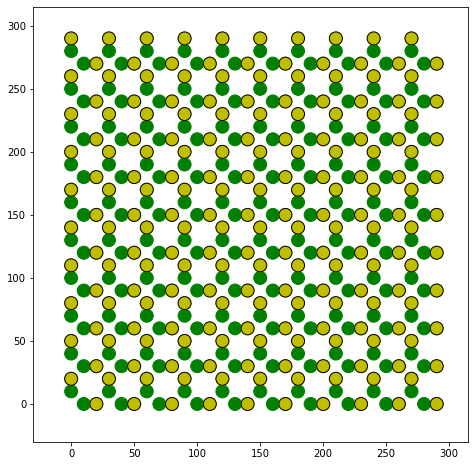

Calculate Energy¶
This notebook introduces the calculation of the energy of the Colloidal Ice, which can be used to observe the evolution of the energetics of a Colloidal Ice system
[1]:
# This only adds the package to the path.
import os
import sys
sys.path.insert(0, '../../../../icenumerics')
import icenumerics as ice
import copy as cp
import matplotlib.pyplot as plt
import numpy as np
import scipy.spatial as spa
%load_ext autoreload
%autoreload 2
%matplotlib inline
[2]:
ureg = ice.ureg
sp = ice.spins()
sp.create_lattice("square",[10,10],lattice_constant=30*ureg.um, border="periodic")
sp.display()

[3]:
particle = ice.particle(radius = 5.15*ureg.um,
susceptibility = 0.0576,
diffusion = 0.125*ureg.um**2/ureg.s,
temperature = 300*ureg.K,
density = 1000*ureg.kg/ureg.m**3)
trap = ice.trap(trap_sep = 10*ureg.um,
height = 80*ureg.pN*ureg.nm,
stiffness = 6e-4*ureg.pN/ureg.nm)
col = ice.colloidal_ice(sp, particle, trap, height_spread = 0, susceptibility_spread = 0.1)
col.pad_region(30*ureg.um)
As before, the display function allows us to visualize the object.
[4]:
f, (ax2) = plt.subplots(1,1,figsize = (8,8))
col.display(ax2)

Calculate the energy of a configuration.¶
The energy of a configuration is calculated by evaluating the sum of the dipole-dipole interactions:
\[U = \sum_{i,j>i}{
-\frac{\mu_0}{4\pi}
\frac{3\left(\vec{m_1}\cdot\vec{r}_{ij}\right)\left(\vec{m_2}\cdot\vec{r}_{ij}\right)}{\left|\vec{r}_{ij}\right|^5} -
\frac{\left(\vec{m_1}\cdot\vec{m_2}\right)}{\left|\vec{r}_{ij}\right|^3}}\]
The physical parameters of the particles (\(\chi\), radius) are stored in the col object, but the field needs to be specified. The calculate_energy method accepts a vector field, or a scalar quantity. If a scalar quantity is given, it is asumed to be in the vertical direction.
[5]:
col.calculate_energy(B = [0,0,1]*ureg.mT)
[5]:
\[5826.621600989864\ nanometer\ piconewton\]
[6]:
col.calculate_energy(B = 1*ureg.mT).__class__.__name__
[6]:
'Quantity'